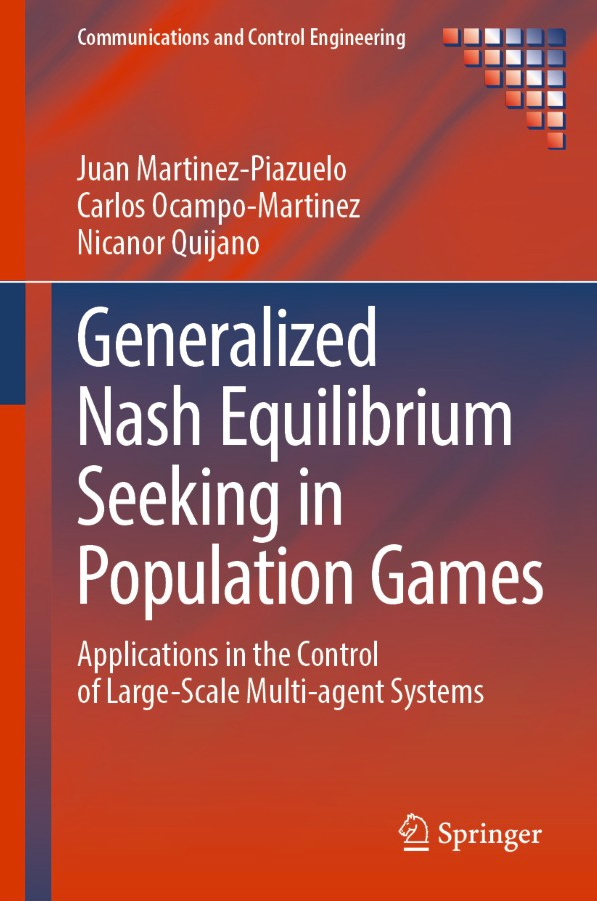

Key Concepts¶
This section introduces the fundamental ideas behind population games and the modeling framework implemented in PopGames.
The goal is to understand how large populations of agents interact, learn, and adapt their behavior over time.
PopGames is designed around a modeling framework composed of three core elements:
Population game
Payoff mechanism
Revision process
Together, these elements describe how strategic environments are defined, how agents perceive performance, and how their behavior evolves over time.
The three fundamental elements¶
1. Population game¶
A population game defines the underlying strategic environment in which agents interact.
Specifically, it specifies:
the populations of decision‑making agents
the available strategic choices for each population
any coupling constraints between the agents’ choices
the fitness functions, which determine how desirable each strategy is as a function of the current distribution of strategies in the population
In other words, the population game defines what the game is: the available strategies and how the quality of those strategies depends on the current state of the system.
2. Payoff mechanism¶
The payoff mechanism determines how agents perceive the performance of their chosen strategies.
While the population game defines the theoretical desirability of strategies through fitness functions, the payoff mechanism specifies the payoffs or rewards that agents actually observe.
It therefore acts as an interface between:
the strategic environment (population game), and
the learning behavior of agents (revision processes).
Examples of payoffs include:
economic rewards
performance metrics
utility functions
system‑level incentives
3. Revision process¶
The revision process describes how and when agents update their strategies.
It can be interpreted as a learning rule governing the adaptation of agents over time.
A revision process typically specifies:
when an agent has the opportunity to revise its strategy
how the agent selects a new strategy based on observed payoffs
Examples include:
imitation dynamics
logit or softmax choice rules
best‑response dynamics
stochastic revision processes
In PopGames, revision processes model how decentralized agents autonomously adapt their behavior according to their performance.
Decentralized decision-making¶
This modeling framework is particularly useful in systems where:
decision-making is distributed
agents operate with limited information
coordination emerges from repeated interactions rather than centralized control
Instead of prescribing individual actions, the framework studies how the distribution of strategies across a population evolves over time.
Such decentralized systems appear in many domains, including:
biological systems
social and economic interactions
traffic and transportation networks
communication networks
multi‑robot systems
distributed control systems
When is the framework applicable?¶
For the framework to be well‑posed, three fundamental properties typically hold.
Large populations¶
Each population consists of a large number of agents.
This allows the system to be modeled using aggregate behavior instead of tracking individual agents.
Finite roles¶
Agents belong to one of a finite number of populations (or roles).
All agents in the same population:
share the same set of strategies
receive the same payoff when choosing the same strategy
Individual identity therefore does not affect payoffs.
Negligible individual influence¶
A single agent has negligible influence on the overall system.
Fitness functions, payoffs, and constraints depend on the aggregate distribution of strategies, not on the decision of any particular agent.
This assumption allows the system to be modeled at the population level.
Population dynamics¶
Unlike classical game theory, which focuses on the reasoning of individual players, the population game framework studies the evolution of strategy distributions.
Rather than tracking individual agents, we analyze how the state of the population changes over time.
This perspective enables the study of emergent collective behavior in large decentralized systems.
Fundamental questions¶
Within this framework, two fundamental questions naturally arise.
1. Does an equilibrium exist?¶
An equilibrium state is a distribution of strategies where no agent can improve its payoff by unilaterally changing its strategy.
If such a state exists, it represents a self‑enforcing agreement among the populations.
In many applications, the relevant concept is the generalized Nash equilibrium.
2. Do populations converge to equilibrium?¶
Even if an equilibrium exists, an important question remains:
Will the population dynamics converge to it?
Given a population game, a payoff mechanism, and a revision process, we want to know whether the system will eventually settle into a stable state.
If convergence occurs, the equilibrium can serve as a predictor of long‑term system behavior.
Designing multi‑agent systems¶
Understanding these dynamics is important not only for analysis but also for system design.
Two main approaches can be considered:
Prescriptive approaches¶
The revision processes of agents are designed explicitly so that the population converges to a desired equilibrium.
This corresponds to designing learning rules or adaptation mechanisms.
Incentive design¶
Agents may follow their own fixed revision processes.
Instead of controlling the learning rule, the system designer modifies the payoff mechanism to steer the
system toward a desired outcome.
This is common in economic and mechanism‑design settings.
Why PopGames?¶
PopGames provides tools to model and simulate these dynamics in a modular and extensible way.
By separating:
population games
payoff mechanisms
revision processes
the library allows researchers and practitioners to experiment with different combinations of models and learning rules.
This modular approach makes it easier to analyze complex multi‑agent systems and study how collective behavior emerges from decentralized decision-making.
Further reading¶
The theoretical foundations of the modeling framework presented here are developed in detail in the following book:
{kind=link}

Generalized Nash Equilibrium Seeking in Population Games
Juan Martinez-Piazuelo, Carlos Ocampo-Martinez, Nicanor Quijano
Springer, 2026
DOI: 10.1007/978-3-032-06081-5
The book provides a rigorous treatment of the topic, together with hands-on examples implemented using popgames.